{% block header %}Products{% endblock %}
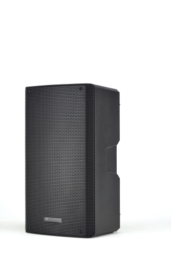
dB Technologies KL 15 Active Speaker
| Brand | dB Technologies |
| Colour | Black |
| Speaker Size | 15" Speaker |
| Inputs | 1x XLR/Jack Combo Input, 1x 6mm Jack, 1x XLR, 1x Bluetooth |
| Volume for Inputs | 3x for different inputs |
| Outputs | 1x XLR Output |
| Description | KL 15 is a 2-way active speaker equipped a 15” woofer and 1” compression driver (1.35 voice coil). The system is driven by a powerful and efficient 800 W amplifier featuring dBTechnologies’ advanced DSP processing where linear phase FIR filters allow the systems to deliver a coherent audio performance, uniform and crystal-clear from every listening position. Moreover, users are enabled to enhance lower and upper frequencies with the convenient DSP preset function. All cabinets feature 3 INPUT channels with independent level management: CH 1 is a balanced combo XLR/6.3 mm Jack line/mic INPUT with a switch to select source; Ch 2 is a balanced XLR and TRS jack IN; CH 3 allows to connect any device via Bluetooth® connection. A balanced link XLR-M Output allows connection to a second loudspeaker or a mixer. A slide switch allow to select which signal is sent to the main output: LINK (the signal is taken before any level control) MIX (the signal is determined by the level control of each channel and Main). The solid and versatile cabinets come with a clean and contemporary full grille design, enhancing both portability thanks to 3 integrated 3 handles (1xside and 1 on top) and multifuncionality: each cabinet can be used horizontally as a stage monitor (on both sides) and features a pole mount cup with 2 tilt angle options (0° and 7.5°) to use KL on tripods or stacked on dBTechnologies Subs. KL comes with its soft cover equipped with a pocket specially designed for cable storage. |
| Includes | Speaker, Speaker stand, Power Cord, Cover for Speaker |
| How Many we own | 2 |
| Rating (out of 100) | 100 |
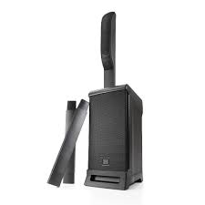
JBL EON ONE PRO All-In-One, Rechargeable, PA System
| Brand | JBl |
| Colour | Black |
| Speaker Size | 6x2" HF Unit and 8" LF Unit |
| Inputs | 4x XLR/Jack Combo Input, 1x Bluetooth, 1x RCA Input |
| Volume for Inputs | 5x for different inputs |
| Outputs | 1x XLR Output, 1x RCA Output |
| Description | Get that world-renowned JBL Professional sound, anytime, anywhere with the new JBL EON ONE PRO, the first, portable, battery-powered, linear-array PA system in its class. With a lighter, more compact design and up to six hours of play time, you can now take your performances to places you’ve only dreamed of. Bring the band along and get pristine audio quality through its seven-channel analog mixer with integrated effects. And keep the crowd engaged between sets by streaming Bluetooth® audio from your mobile device. Carry your PA with just one hand. Set up and get that legendary JBL sound in seconds. Cut the cord and give your fans powerful, unique experiences—pop-up performances, remote weddings, subway stops, beach bonfires, rooftops, street corners, and more—the only limitation is your imagination. PLAY ANYWHERE with the new JBL EON ONE PRO. |
| Includes | Speaker, Power Cord, wheeled bag for Speaker |
| How Many we own | 2 |
| Rating (out of 100) | 87 |
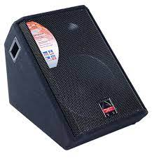
Wharfedale EVP-X15PM 400w 15" Powered Foldback Wedge
| Brand | Wharfedale |
| Colour | Black |
| Speaker Size | 15" Two-way monitor |
| Inputs | 2x XLR/Jack Combo Input |
| Volume for Inputs | 2x for different inputs |
| Outputs | 1x XLR Output, 1x RCA Output |
| Description | The Wharfedale Professional EVP-X series loudspeaker systems are the latest evolution of our highly successful EVP-S family. Built around the development of an exceptional new Elliptical Waveguide Horn coupled with a ferrofluid cooled 44mm titanium compression driver, the high frequency performance and system reliability of this series is unprecedented in this product class. High output capability and low distortion with excellent high frequency extension characterize these new drivers. The EVP-X series loudspeakers combine exceptional design and features with outstanding sound quality to provide a choice of sound systems to suit almost any application. |
| Includes | Speaker, Power Cord, wheeled bag for Speaker |
| How Many we own | 1 |
| Rating (out of 100) | 80 |
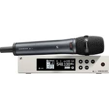
Sennheiser EW100G4-865 Handheld Wireless Mic with E865 Capsule
| Brand | Sennheiser |
| Colour | Silver and Black |
| Microphone | SKM 100 G4 handheld transmitter with mute switch with a condenser e865 supercardioid capsule |
| Inputs | 2x Antennas |
| Outputs | 1x XLR Output, 1x 6mm Jack |
| Description | The Sennheiser EW100G4-865 (ew165 G4) Handheld Wireless Mic with E865 supercardioid condenser capsule is the perfect lead vocal and speech mic for churches, schools, general presentation and band use. This package includes the SKM 100 G4 handheld transmitter with mute switch, a condenser e865 supercardioid capsule, a sleek designed EM 100 G4 rackmount receiver, a GA3 rack kit, a RJ10 linking cable, and a mic clip. Some of the G4's updated features include: Multi-channel setup capabilities allowing up to 12 systems—daisy-chained with an easy setup function (cable included), a high-contrast LCD display, blue sync LED, and a dedicated escape button. The SKM transmitter is lighter in weight and built with an aluminum housing, and is designed with a programmable mute switch. A rackmount kit is also included. Additionally, the transmitter and receiver synchronize channel and frequency at the touch of a button. The handheld microphone allows you to charge the (optional) rechargeable battery pack while it remains in the handheld transmitter. The receiver's display allows for easy operation under dimly lit conditions, and its user-friendly menu makes operation quick and easy. |
| Includes | Microphone, Antennas, Receiver and 2x AA batteries |
| How Many we own | 3 |
| Rating (out of 100) | 90 |
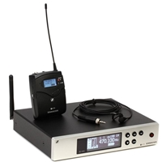
Sennheiser ew100G4-ME2 Wireless Lapel Kit
| Brand | Sennheiser |
| Colour | Silver and Black |
| Microphone | SK 100 G4 bodypack transmitter with ME 2-II omnidirectional lavalier microphone and a ME 2-II Headset and Over One Ear Microphone |
| Inputs | 2x Antennas |
| Outputs | 1x XLR Output, 1x 6mm Jack |
| Description | The ew 100 G4-ME 2-II Wireless Bodypack System (ew112 G4) with ME 2-II Omnidirectional Lavalier Microphone from Sennheiser is the latest addition to their evolution family of wireless microphones that is fully compatible with all previous series. This kit includes an EM100 G4 UHF diversity rackmount receiver, an SK 100 G4 bodypack transmitter with ME 2-II omnidirectional lavalier microphone, headset microphone, over one ear microphone a GA3 rackmount kit, and a RJ10 linking cable. It can be used to capture audio in indoor environments for hands-free speech and interview applications. Both transmitter and receiver synchronize channel and frequency at the touch of a button. The bodypack transmitter allows you to charge the (optional) rechargeable battery pack while installed. The receiver's high-contrast LCD display allows for easy operation under dimly-lit conditions and its user-friendly menu makes operation quick and easy. The ew 100 G4-ME 2-II Wireless Bodypack System with ME 2-II omnidirectional lavalier microphone is at home in theaters, clubs, town halls, houses of worship, and more. The SK 100 G4 Wireless Bodypack Transmitter from Sennheiser is the latest addition to their evolution family of wireless microphones. It features true diversity technology and can be used when paired with a companion receiver and microphone, as part of a wireless RF transmission system for live stage, theater, presentation, and rehearsal applications. The transmitter features 1680 frequencies tunable in 25 kHz steps with 20 fixed frequency banks and up to 12 compatible frequency presets. There is 1 user bank with up to 12 user programmable frequencies. The transmitter's menu-driven backlit display shows current frequency, frequency band and channel number, metering of AF level, transmission status, battery status, and more. Furthermore, the transmitter is equipped with a mute switch and is powered by two 1.5V AA size batteries or by one Sennheiser BA 2015 rechargeable accupack. It is built with a rugged metal housing. The SK 100 G4 transmitter will operate about 8 hours and is equipped with a 1/8" line/mic input jack. With 25 Hz to 18 kHz AF frequency response, the SK 100 G4 is designed to deliver a natural audio quality. |
| Includes | Body Pack Microphone, Lavalier Microphone, headset microphone, over one ear microphone, Antennas, Receiver and 2x AA batteries |
| How Many we own | 12 |
| Rating (out of 100) | 88 |
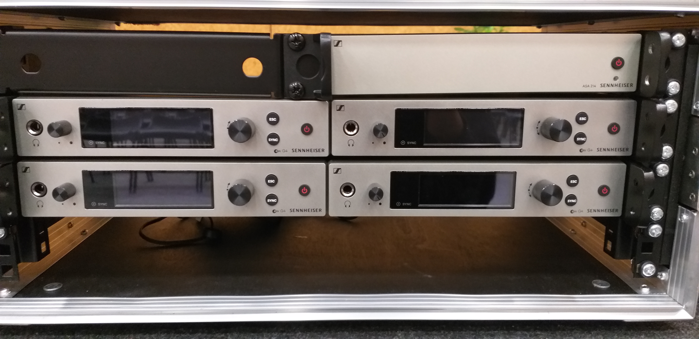
Road case of 4xSennheiser wireless microphones
| Brand | Sennheiser (custom built by Sancta Maria College) |
| Colour | Silver and Black |
| Microphones | Up to 4 (mixable combinations) of the SK 100 G4 bodypack transmitter with ME 2-II omnidirectional lavalier microphone and a ME 2-II Headset and Over One Ear Microphone and the SKM 100 G4 handheld transmitter with mute switch with a condenser e865 supercardioid capsule |
| Inputs | 8x Antennas or 2x large antennas into Sennheiser EW-D ASA 4 way active antenna spliter box |
| Outputs | 4x XLR Output, 4x 6mm Jack |
| Description | A custom build done by Sancta Maria College, this Road case of 4xSennheiser wireless Microphones was built for events where multiple wireless microphones are required which can end up to be quite a lot of gear. Having 4 Sennheiser receivers allows for 4 handhelds or 4 lapels or a mixture of 4 Microphones to be used at the same time on their own antennas or a antenna spliter. Information on microphones can be found above with the specs of the microphones shown. The antenna spliter reduces the power plugs to one sending signals and power through antenna connections. The Sennheiser EW-D ASA is a 4-way active antenna splitter that delivers diversity wireless signal distribution for up to four EW-D EM wireless receivers. It also provides DC power to the four receivers, for less clutter in your rack. The unit covers the Q, R, and S frequency ranges, from 470 to 694 MHz. The EW-D ASA receives up to four wireless microphone signals through a single pair of antennas, split and amplifies these signals, and send each signal to their respective receiver via the included BNC cables. |
| Includes | 4x mixture of sennheiser micsBody, Antenna spliter 8x Antennas, 4x Receiver and 8x AA batteries |
| How Many we own | 2 |
| Rating (out of 100) | 94 |
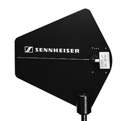
The Sennheiser A2003UHF Wide-Band Directional Antenna
| Brand | Sennheiser |
| Colour | Black |
| Antennas | The Sennheiser A2003UHF Wide-Band Directional Antenna |
| Outputs | 2x antenna connections |
| Description | The Sennheiser A2003UHF Wide-Band Directional Antenna enhances transmission and reception for wireless microphone and monitoring systems; such as the Sennheiser SR 300, SR 3054, SR 3056, IEM transmitters, Evolution wireless, 3000 and 5000 series wireless, and the EM-1031U monitoring system. The antenna features directional reception and transmission over wide band 450 - 960MHz UHF frequencies. The antenna is lightweight, easily installs onto a microphone stand and features a standard BNC connection jack. Enhanced wide-band reception, Directional transmission and reception, 3/8" 5/8" thread Mounts onto standard microphone stands |
| Includes | 2x Antennas, 2x Antenna Cords and 2x stands |
| How Many we own | 2 |
| Rating (out of 100) | 98 |

Rode M5 Compact 1/2" Condenser Microphone (Matched Pair)
| Brand | Rode |
| Colour | Black |
| Microphones | 2x Rode M5 Compact 1/2" Condenser Microphone |
| Outputs | 1x XLR |
| Description | The M5 Microphones from Rode are a matched pair of condenser microphones that have a variation of no more than 1 dB of sensitivity between them. The M5 itself is a pencil-style microphone that features a 12.70 mm diameter gold-plated membrane capsule with a cardioid polar pattern. The microphones have transformerless circuitry for low noise operation and can be used in typical live and studio applications for small diaphragm condenser microphones, including on acoustic instruments, choirs, as drum overheads, and more. |
| Includes | 2x Microphones, 2x Mic Clips, and 2x Windbreakers |
| How Many we own | 4 |
| Rating (out of 100) | 100 |
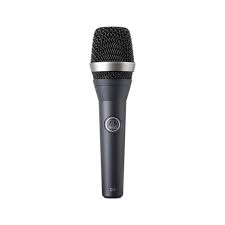
D5 Professional dynamic supercardioid vocal microphone
| Brand | AKG |
| Colour | Black, Sliver and Grey |
| Microphones | 1x D5 Professional dynamic supercardioid vocal microphone |
| Outputs | 1x XLR |
| Description | The D5 professional dynamic vocal microphone for lead and backing vocals delivers a powerful sound even on the noisiest stage. Its frequency-independent supercardioid polar pattern ensures maximum gain before feedback. The D5 stands for a crisp sound that cuts through every mix. The dual shock mount eliminates any kind of mechanical noise for trouble-free live use. The audience will hear the pristine sound of your voice! The D5 S has the same mechanical, electrical, and acoustic characteristics as the D5 and features a noiseless on/off switch. |
| Includes | 1x Microphone, 1x Mic Clip, and 1x Bag |
| How Many we own | 3 |
| Rating (out of 100) | 89 |
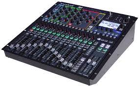
Soundcraft Si Expression 1
| Brand | SoundCraft |
| Colour | Black |
| Inputs | 16x XLR, 4x 6mm Jack |
| Outputs | 16x XLR |
| Description | The Soundcraft Si Expression 1 16-channel digital mixer leverages cutting-edge DSP, component technology, and manufacturing techniques to deliver awesome mixing power in a compact, amazingly affordable rackmount package. The Si Expression 1 gives you 16 recallable mic preamps, four line inputs, four internal stereo FX returns, and AES in. A 64 x 64 expansion slot lets you deploy up to 66 input processing channels. Each sports a highpass filter, input delay, gate, compressor, and 4-band EQ. Robust automation and connectivity are the icing on the cake. Take your mixing to the next level, with Soundcraft’s Si Expression 1. Si Expression 1 also supports versatile bussing, output processing, and connectivity. You can configure the 14 aux/group mixes as 14 mono mixes, eight mono plus six stereo mixes or just about anything in between. The four matrix mixes can be mono or stereo as required. You also get four more mix busses dedicated to the internal Lexicon FX processors, in addition to the left, right, and center busses. Each bus mix features always-available compression, 4-band EQ, BSS graphic EQ, and delay. Comprehensive output connectivity includes 16 balanced line outs, a headphone out, AES out, and the 64 x 64 option slot. Use with Soundcraft ViSi Remote to roam your venue wirelessly adjusting mixes and other audio parameters directly from an iPad! Soundcraft Si Expression consoles incorporate four stereo Lexicon FX processors based on the acclaimed MX400. With fully adjustable parameters and dedicated tap-tempo keys, you can tweak to your heart’s content. These FX are hardware-based, so even if you’re using a ton of them it doesn’t affect your other processing in the slightest. All of your dynamics, EQ, filters, delays, and GEQs will always be available, no questions asked. |
| Includes | 1x Mixer, 1x Power Cord and 1x Snake |
| How Many we own | 1 |
| Rating (out of 100) | 100 |
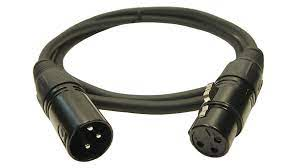
XLR Cable (Size Varies)
| Brand | Various |
| Colour | Black or Blue |
| Description | XLR cables of different sizes, Small = 3m, Medium = 6m, Large = 10m |
| Includes | Any number of XLR's chosen |
| How Many we own | Multiple of Each |
| Rating (out of 100) | 100 |
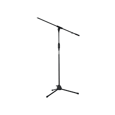
Mic Stand (Size Varies)
| Brand | Various |
| Colour | Black or silver |
| Description | Mic Stands of different sizes, Small, Medium, Large |
| Includes | Any number Mic Stands of chosen |
| How Many we own | Multiple of Each |
| Rating (out of 100) | 100 |
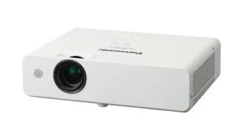
Panasonic PT-LW330 LCD Projector
| Brand | Panasonic |
| Colour | White |
| Inputs | 2x HDMI, 1x VGA Input, 2x USB, 1x RCA |
| Outputs | 1x RCA Output |
| Description | The Panasonic PT-LW330 LCD Projector is bright (3300 lumens), compact and easy to use ‒ ideal for education and corporate uses. This WXGA 3LCD multimedia projector provides detailed high resolution images and features 3300 lumens of brightness. You can use the PT-LW330 to project up to a 300″ diagonal screen size. This projector also supports USB memory drive connectivity for photo and PDF viewing. In addition to JPEG/BMP image and text files, PDF files can be projected by simply inserting a USB memory device containing the data into the USB memory port. You can start your presentation without having to connect to a computer. It also has a USB Display function – outputs images and sounds from a computer without the need to install any software. Simply connect to the USB port with a single USB cable and start your presentation. |
| Includes | Any number Mic Stands of chosen |
| How Many we own | 2 |
| Rating (out of 100) | 100 |
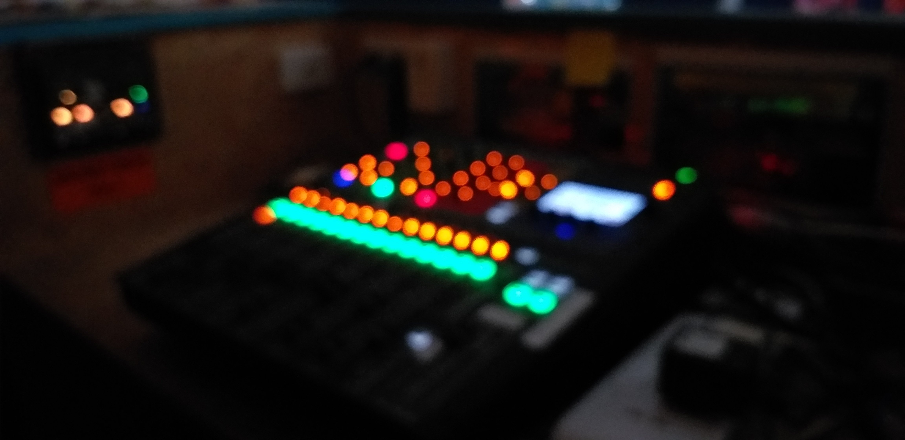
Sancta Maria College Auditorium System
| Brand | Various |
| Colour | Various |
| Inputs | 16x XLR, 4x 6mm Jacks, 1x RCA, 1x Bluetooth, 3 HDMI |
| Outputs | 1x 3.5mm Jack, 1x HDMI |
| Description | The Sancta Maria College Auditorium Sound System is a inbuilt system in our schools auditorium which includes 3x Handheld Mics, 3x Lapels, 6x Walkie Talkies, Mulitple HDMI Cords, 1x Black Magic camera Switcher, 2x PTZ cameras, Multiple RCA cords, 1x Mini PC, 3x Screens, 2x Projectors, 2x TV's, 1x Soundcraft SI Impact Mixer, 1x USB Clicker, 1x HP Laptop, 1x 6 Speaker PA system, 1x Lectern Mic as some major stuff. It has an inbuilt Snake as well as various places to plug in laptops to display content. This system is a simple to use system and is mainly used for assemblies and events with other gear connected through HDMI cords and XLR's. |
| Includes | 3x Handheld Mics, 3x Lapels, 6x Walkie Talkies, Mulitple HDMI Cords, 1x Black Magic camera Switcher, 2x PTZ cameras, Multiple RCA cords, 1x Mini PC, 3x Screens, 2x Projectors, 2x TV's, 1x Soundcraft SI Impact Mixer, 1x USB Clicker, 1x HP Laptop, 1x 6 Speaker PA system, 1x Lectern Mic |
| How Many we own | Only 1 and this if for Auditorium Events only |
| Rating (out of 100) | 100 |